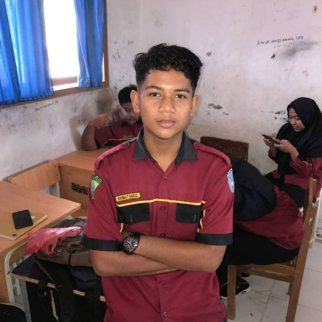
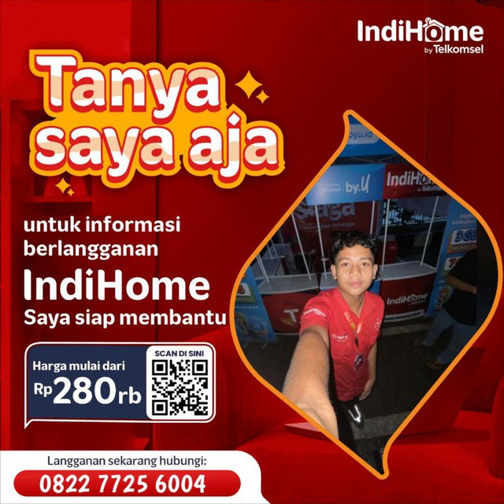
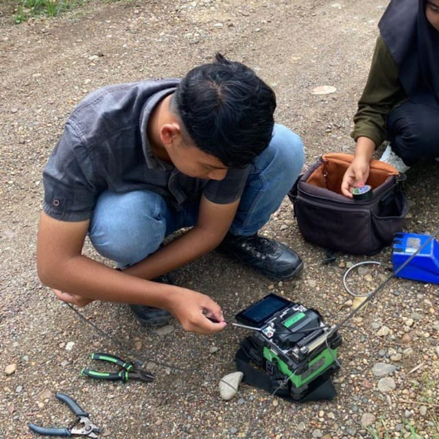
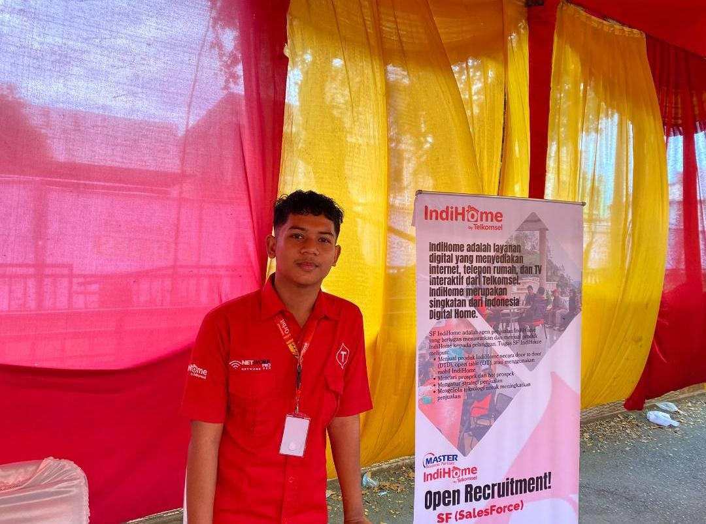
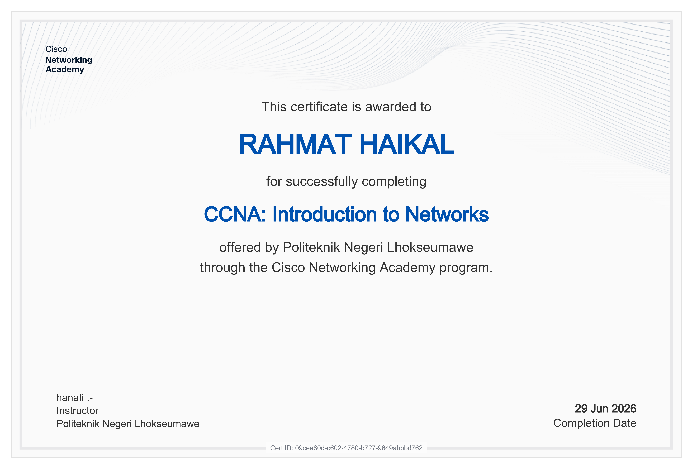
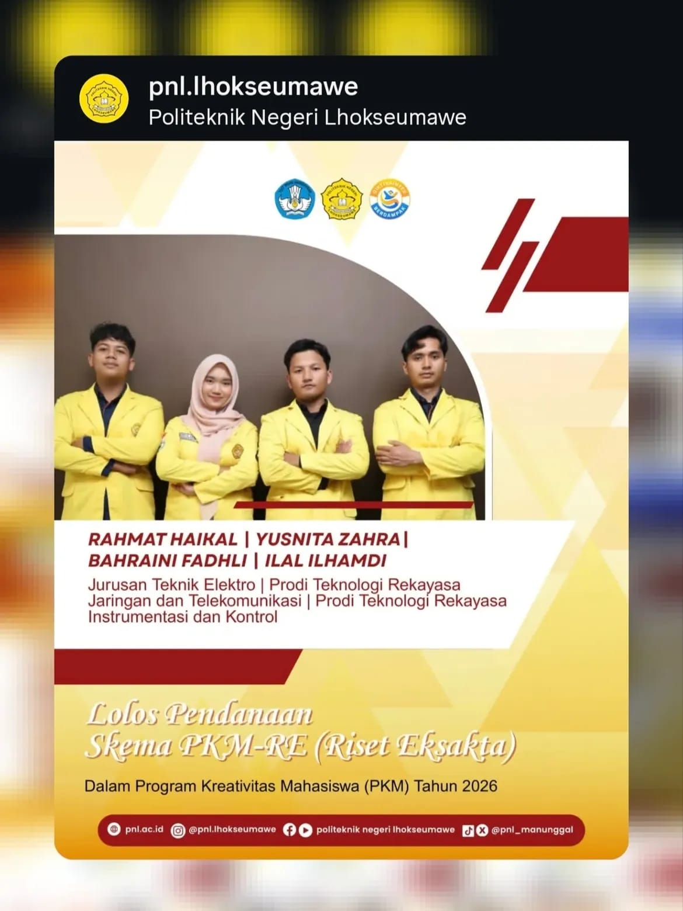
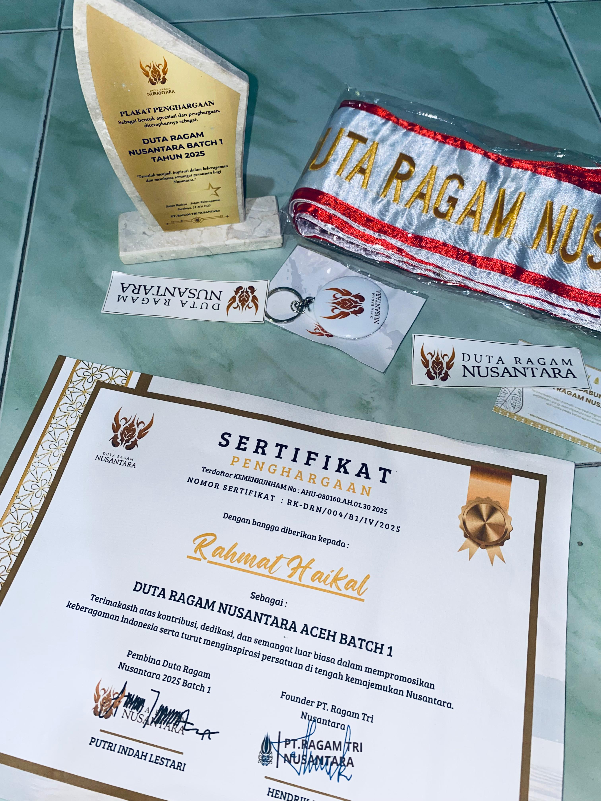
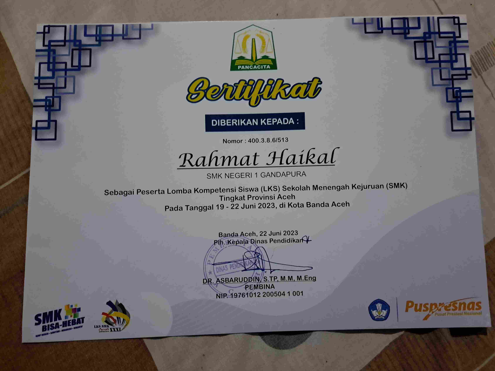
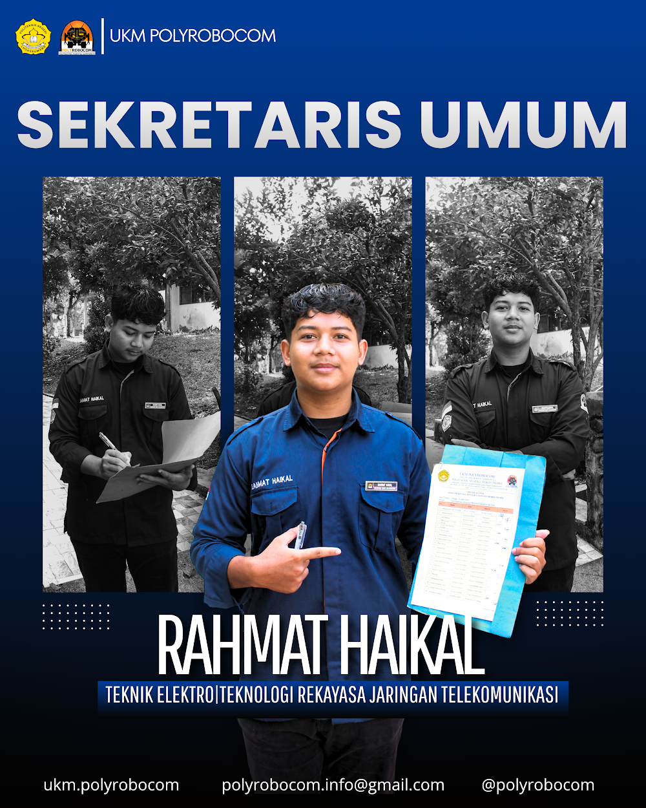
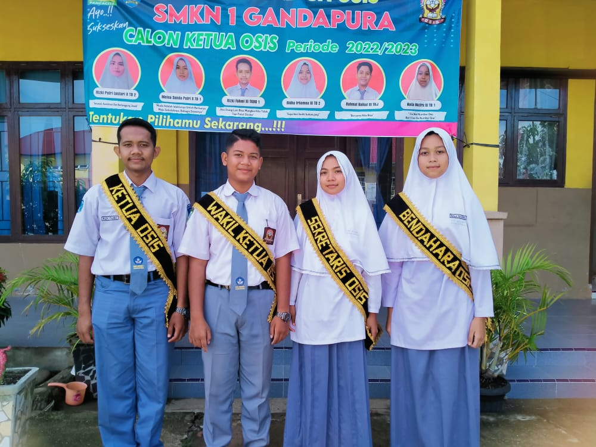

Halo, Saya
Rahmat Haikal
Saya seorang |
Mahasiswa Teknologi Rekayasa Jaringan Telekomunikasi | Cloud & IoT Enthusiast | Inovator Teknologi Digital
Tentang Saya
Ringkasan Profesional & Visi
Ringkasan Profesional
Saya adalah mahasiswa Sarjana Terapan Teknologi Rekayasa Jaringan Telekomunikasi di Politeknik Negeri Lhokseumawe. Memiliki minat besar pada bidang jaringan komputer, telekomunikasi, cloud computing, Internet of Things (IoT), serta transformasi digital.
Saya telah memperoleh pengalaman dalam instalasi jaringan fiber optic, administrasi jaringan, troubleshooting, cloud computing, hingga pengembangan solusi berbasis IoT. Selain itu, saya tersertifikasi Cisco CCNA: Introduction to Networks.
Visi
"Menjadi seorang profesional di bidang Teknologi Informasi dan Telekomunikasi yang mampu mengembangkan solusi digital inovatif untuk mendukung transformasi teknologi di Indonesia."
Minat
Perjalanan & Pengalaman
Pendidikan dan Jejak Karier Profesional
Pendidikan
Sarjana Terapan Teknologi Rekayasa Jaringan Telekomunikasi
Politeknik Negeri Lhokseumawe
Fokus: Computer Network, Routing & Switching, Fiber Optic, IoT, Cloud Computing.
Teknik Komputer dan Jaringan
SMK Negeri 1 Gandapura
Juara kelas 6 semester berturut-turut. Juara Harapan I LKS Provinsi Aceh Bidang Cloud Computing.

Pengalaman Profesional
Agency Master
IndiHome by Telkomsel
Promosi layanan, administrasi pelanggan, troubleshooting, dan koordinasi pemasangan layanan.

Network Engineer Intern
PT Putra Bahagia (ICONNET PLN)
Instalasi Fiber Optic, maintenance jaringan, dan perbaikan gangguan jaringan.

Intern
PT Telkom Akses
Penyelesaian gangguan pelanggan dan pendampingan teknisi lapangan.

Penghargaan & Sertifikasi
Organisasi, Penghargaan, dan Kredensial Profesional
Cisco Certified - CCNA

Introduction to Networks
Diterbitkan: 29 Juni 2026 | Verified Digital Credential
Kompetensi: Network Fundamentals, Routing & Switching, IPv4/IPv6, Cisco IOS, Basic Network Security.
Lihat KredensialPendanaan PKM-RE Nasional

Tahun: 2026
Program Kreativitas Mahasiswa – Riset Eksakta tingkat Nasional.
Duta Ragam Nusantara

Tahun: 2025 | Provinsi Aceh
Juara Harapan I LKS

Bidang Cloud Computing
Tahun: 2023 | Provinsi Aceh
Sekretaris Umum

UKM POLYROBOCOM
Tahun: 2025 - Sekarang
Wakil Ketua OSIS

SMKN 1 Gandapura
Tahun: 2022 - 2023
Keahlian Teknis & Soft Skill
Kompetensi Utama Saya
Keahlian Teknis
Soft Skill
Penelitian (PKM-RE)
Topik: Pengaruh Variasi Scrape Interval dan Threshold Alertmanager terhadap Kinerja Alerting Sistem Monitoring Jaringan MikroTik RouterOS.
Proyek Unggulan
Karya dan Inovasi Terbaru Saya
Website Project Polyrobocom
Website resmi untuk organisasi mahasiswa UKM POLYROBOCOM.
Kunjungi WebsiteSistem Absensi Online PRC
Platform absensi online terintegrasi untuk manajemen kehadiran anggota POLYROBOCOM.
Kunjungi DashboardHubungi Saya
Mari Diskusikan Peluang dan Kolaborasi
Informasi Kontak
Saya selalu terbuka untuk mendiskusikan proyek baru, ide kreatif, atau peluang untuk menjadi bagian dari visi Anda.